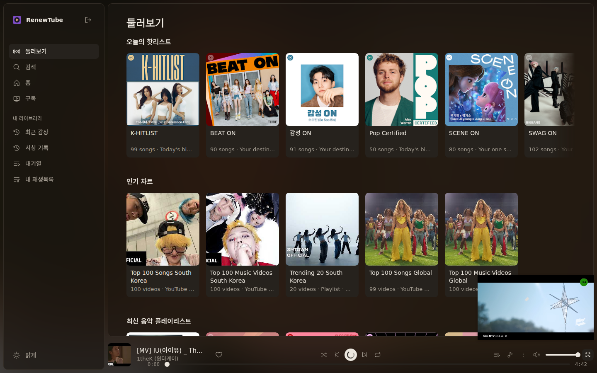
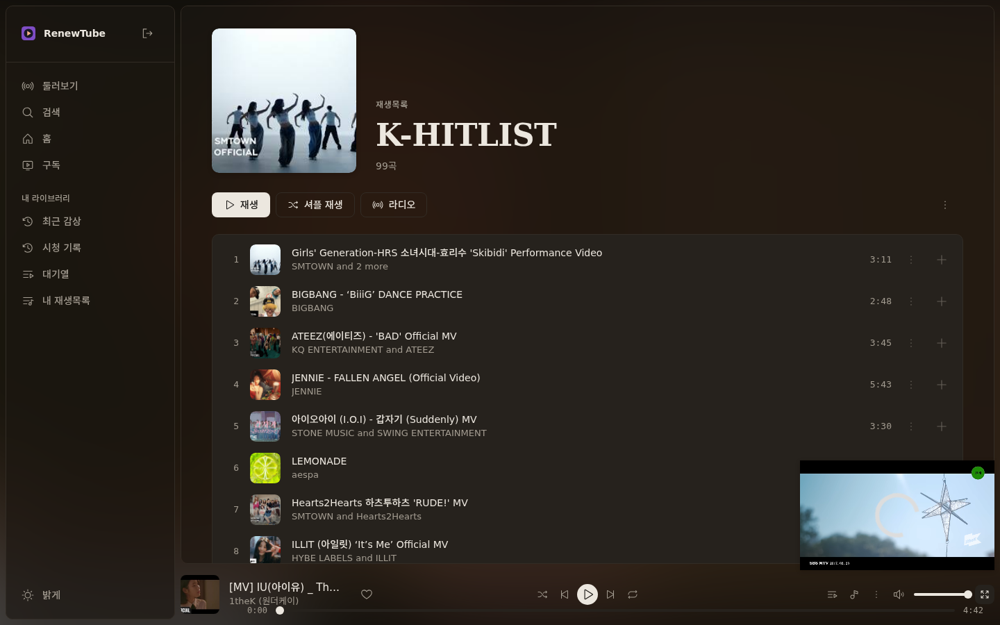

심플하고 쉬운 유튜브 재생기 A Simple, Quiet YouTube Player
유튜브 화면을 심플하고 쉬운 재생기로 완전히 바꿔 드립니다. 음악과 영상을 한자리에서 다루며, 재생과 스트림은 유튜브가 그대로 맡습니다. Turns YouTube into a player of your own. Music and video on one screen, and YouTube still does the playing.
오리온, 크롬, 엣지 브라우저에서 모두 동일한 파일을 사용합니다. One package works across Orion, Chrome, Edge, and compatible browsers.


기능 안내 Features
핵심 기능 구성 Core Experience
추천 피드 대신 플레이어 화면을 보여줍니다. 재생과 데이터는 유튜브가 그대로 맡고, 화면만 바꿉니다. A player screen instead of the recommendation feed. YouTube keeps the streams and the data; only the screen changes.
둘러보기 Browse
선반으로 구성된 첫 화면입니다. 로그인하지 않아도 비어 있지 않고, 음악과 영상 목록을 바로 둘러보실 수 있습니다. The first screen is shelves, and they are filled without a Google sign-in.
대기열과 재생목록 Queue & Playlists
다음에 재생될 목록을 보고 순서를 바꿉니다. 무작위 재생과 반복, 재생목록도 여기서 다룹니다. See what plays next and reorder it. Shuffle, repeat and playlists live here too.
음악 모드와 영상 모드 Music & Video Modes
가볍게 들을 때는 트랙 목록, 화면을 볼 때는 썸네일 격자입니다. 버튼 하나로 오갑니다. A track list for listening, a thumbnail grid for watching. One button switches between them.
쇼츠 없음 Zero Shorts
세로형 쇼츠는 어떤 화면과 목록에도 나오지 않습니다. Shorts appear in no shelf and no search result.
방향키 조작 Keyboard & Remote
마우스 없이 키보드 화살표로 항목을 옮기고 Enter로 실행합니다. 거실 TV의 리모컨처럼 씁니다. Arrow keys move between items and Enter opens them, the way a TV remote does.
이퀄라이저와 볼륨 부스터 Equalizer & Volume Booster
다섯 밴드 이퀄라이저와 최대 3배 볼륨 부스터를 켤 때만 오디오 그래프를 만듭니다. 소리가 나지 않는 브라우저에서는 스스로 꺼집니다. A five-band equalizer and a booster up to 3x, built only when switched on. In a browser that goes silent, it switches itself off.
구독 채널 필터 Channel Filter
구독 화면에서 보고 싶은 채널만 골라 봅니다. 고른 채널은 기억되고, 한 번에 해제하실 수 있습니다. Pick which subscribed channels the Subscriptions screen shows. The choice is remembered and cleared with one press.
데스크톱과 모바일 Desktop & Mobile
오리온, 크롬, 엣지 등 데스크톱 웹 브라우저는 물론, 모바일 오리온 브라우저에서도 동일하게 작동합니다. Works on desktop Chrome, Orion and Edge, and on Orion for iPhone and iPad.
설치 가이드 Installation
브라우저별 설치 방법 How to Install
내려받으신 파일을 브라우저에 등록해 주세요. 별도의 복잡한 과정 없이 1분 안에 설치하실 수 있습니다. Register the downloaded package with your browser. Setup completes in under a minute without complex configuration.
오리온 브라우저 Orion Browser
- 상단의 내려받기 단추를 눌러 압축 파일(zip)을 받아 주세요.
- 브라우저 메뉴에서 설정 → 확장으로 이동하신 후 + 단추를 눌러 해당 zip 파일을 선택해 주세요.
- 주소 표시줄 우측의 확장 프로그램 아이콘을 눌러 켜 주시면 완료됩니다.
- Click the Download button above to save the zip package.
- Open Settings → Extensions in Orion and tap + to select the downloaded zip file.
- Click the extension icon in the toolbar to activate RenewTube.
크롬 및 엣지 브라우저 Chrome & Edge
- 내려받으신 압축 파일(zip)을 원하시는 폴더에 풀어 주세요.
- 주소창에
chrome://extensions를 입력하여 이동하신 후, 우측 상단의 개발자 모드를 켜 주세요. - 좌측 상단의 '압축해제된 확장 프로그램을 로드합니다' 단추를 눌러 압축을 푼 폴더를 지정해 주세요.
- Unzip the downloaded package into your preferred folder.
- Navigate to
chrome://extensionsin the address bar and turn on Developer mode. - Click Load unpacked at the top left and select the extracted folder.
안내 사항 Good to Know
이용 시 알아두실 점 Design Principles & Notes
원활하고 투명한 이용을 위해 확장의 동작 방식과 범위를 미리 안내해 드립니다. Transparent details on how RenewTube operates within the browser.
- Esc 두 번으로 언제든 종료 Double-Esc to Exit Anytime
- 유튜브의 본래 구조를 훼손하지 않습니다. 키보드의 Esc 키를 1초 안에 두 번 누르시면 언제든지 확장을 닫고 본래의 유튜브 화면으로 즉시 되돌아옵니다. Leaves YouTube intact. Press Esc twice within 1 second to close RenewTube and get the ordinary YouTube page back.
- 화면 잠금 재생은 브라우저 기능 사용 Background & Screen-Off Playback
- 기기 화면이 꺼진 상태에서의 재생은 확장이 직접 제어하지 않으며, 오리온 브라우저 등이 자체적으로 지원하는 백그라운드 미디어 재생 기능을 활용합니다. Playback with the screen turned off relies on native browser background audio capabilities (such as Orion's background playback).
- 광고 차단 없음 No Built-In Ad Blocking
- 유튜브 스트림 규정을 준수하며 광고 차단 기능을 내장하지 않습니다. 기존에 사용하시던 차단 확장 프로그램이 있으실 경우 그대로 함께 켜 두시면 됩니다. RenewTube complies with YouTube streaming standards and does not block ads. Dedicated content blockers can be used alongside it.
- 구독과 기록은 로그인 필요 Library Requires Sign-In
- 검색과 둘러보기는 로그인 없이 됩니다. 다만 개인 구독 채널 목록, 시청 기록 및 보관함 재생목록을 불러오시려면 유튜브 로그인이 필요합니다. Search and explore shelves work anonymously. Personal subscriptions, watch history, and saved playlists connect via standard YouTube login.